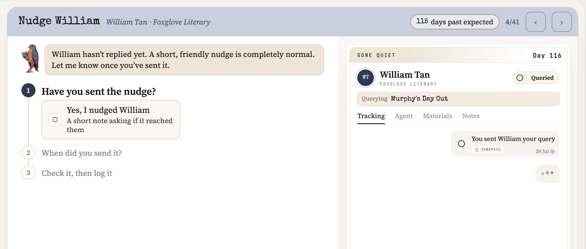

v58 as it is on dev, with each fix on its own switch. Only the list and the desk's header are live; the rest of the desk is a picture of dev.

Hover a row to see its two quick actions. Switch the list to "At 1280" to see fix 4, and turn on fix 5 to jump to Housekeeping. The desk stays on Nudge William whichever row you click.